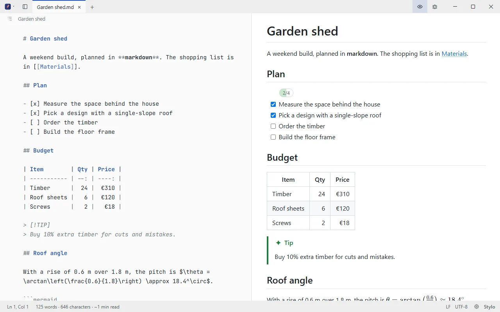

Ένας ήρεμος markdown editor για Windows
Γράψε απλά αρχεία .md με τη μορφοποιημένη σελίδα δίπλα, ή σε μια καθαρή προβολή γραφής που κρύβει τα
σύμβολα. Σημειώσεις, συνδέσεις, μαθηματικά, διαγράμματα και PDF, σε μια μικρή, γρήγορη εφαρμογή. Δωρεάν, χωρίς
λογαριασμό και χωρίς telemetry.
Δωρεάν · Windows 10 και 11, 64-bit · εγκαθίσταται χωρίς δικαιώματα διαχειριστή

Τι κάνει
Ζωντανή προεπισκόπηση
Η μορφοποιημένη σελίδα δίπλα στο κείμενο, και κυλάει μαζί του.
Προβολή γραφής
Μόνο το κείμενο, χωρίς τα σύμβολα του markdown. Εστίαση στην παράγραφο ή η γραμμή πάντα στη μέση.
Φάκελοι σημειώσεων
Στήλη Αρχείων με αναζήτηση σε όλα τα αρχεία, #tags και [[συνδέσεις]] ανάμεσα σε σημειώσεις.
Πλούσιο markdown
Πίνακες, λίστες εργασιών, μαθηματικά με KaTeX, διαγράμματα Mermaid, callouts και χρωματισμένος κώδικας.
Εξαγωγή και παρουσίαση
PDF με ένα βήμα, HTML, μορφοποιημένο κείμενο για email ή Word, και διαφάνειες από το αρχείο σου.
Ασφαλές για τα αρχεία σου
Απλά αρχεία .md, με ασφαλή αποθήκευση, πρόχειρα που μένουν και ιστορικό εκδόσεων.


Εγκατάσταση
-
Κατέβασε το
Stylo_X.Y.Z_x64-setup.exeαπό την τελευταία έκδοση. - Άνοιξέ το. Τα Windows μάλλον θα δείξουν «Τα Windows προστάτευσαν τον υπολογιστή σας»: πάτα Περισσότερες πληροφορίες και μετά Εκτέλεση οπωσδήποτε.
- Διάλεξε Ελληνικά ή Αγγλικά, και το Stylo εγκαθίσταται για τον χρήστη σου, χωρίς δικαιώματα διαχειριστή.
Γιατί η προειδοποίηση; Ο installer δεν έχει ψηφιακή υπογραφή. Το Stylo είναι δωρεάν και μη κερδοσκοπικό, και ένα πιστοποιητικό υπογραφής κοστίζει κάθε χρόνο.
Έλεγχος του αρχείου (προαιρετικά)
Κάθε έκδοση έχει ένα αρχείο .sha256 δίπλα στον installer. Στο PowerShell, στον φάκελο όπου κατέβασες
και τα δύο, αυτό τυπώνει True όταν ο installer είναι ακριβώς αυτός που δημοσιεύτηκε:
(Get-FileHash .\Stylo_1.0.0_x64-setup.exe).Hash -eq (Get-Content .\Stylo_1.0.0_x64-setup.exe.sha256).Split(' ')[0]Βάλε τον αριθμό της έκδοσης που κατέβασες.
Απαιτήσεις
- Windows 10 ή Windows 11, 64-bit.
- Microsoft Edge WebView2, που υπάρχει ήδη στα Windows 10 και 11. Αν λείπει, το εγκαθιστά ο installer.
Ερωτήσεις
Είναι όντως δωρεάν;
Ναι. Χωρίς διαφημίσεις, χωρίς λογαριασμό, χωρίς πληρωμένη έκδοση. Μπορείς να δώσεις τον installer και σε άλλους, αναλλοίωτο και δωρεάν· δεν μπορείς να τον πουλήσεις. Ο κώδικας δεν είναι δημόσιος. Δες την άδεια (στα αγγλικά).
Πώς γίνονται οι ενημερώσεις;
Όταν ξεκινά, το Stylo ρωτά το GitHub αν υπάρχει νέα έκδοση και προτείνει να την εγκαταστήσει· τίποτα δεν εγκαθίσταται χωρίς να συμφωνήσεις. Ο έλεγχος κλείνει από Ρυθμίσεις → Γενικά → «Έλεγχος για νέα έκδοση κατά την εκκίνηση».
Πού είναι τα δεδομένα μου;
- Τα κείμενά σου είναι κανονικά αρχεία
.md, όπου τα αποθηκεύεις. -
Ρυθμίσεις, πρόχειρα και ιστορικό εκδόσεων είναι στο
%LOCALAPPDATA%\gr.stylo.app, στον υπολογιστή σου. - Τίποτα δεν ανεβαίνει πουθενά.
Πώς το απεγκαθιστώ;
Ρυθμίσεις των Windows → Εφαρμογές → Εγκατεστημένες εφαρμογές → Stylo → Κατάργηση εγκατάστασης. Ο uninstaller
ρωτά αν θα σβήσει και τα δεδομένα της εφαρμογής (ρυθμίσεις, πρόχειρα, ιστορικό). Τα αρχεία .md σου
δεν τα αγγίζει ποτέ.
Ιδιωτικότητα
- Χωρίς telemetry. Καμία καταγραφή χρήσης, κανένας λογαριασμός.
- Μόνο έλεγχος ενημερώσεων. Το μόνο που κάνει το Stylo μόνο του στο δίκτυο είναι να ρωτά το GitHub για νέα έκδοση, και αυτό κλείνει από τις Ρυθμίσεις.
- Τις αναφορές προβλημάτων τις στέλνεις εσύ. Η «Αναφορά προβλήματος» ανοίγει ένα έτοιμο issue στο GitHub, στον browser σου, με την έκδοση του Stylo, των Windows και του WebView2. Χωρίς ονόματα ή περιεχόμενο αρχείων. Το διαβάζεις και αποφασίζεις αν θα το στείλεις.
- Αυτή η σελίδα δεν έχει cookies, analytics ή trackers. Φιλοξενείται στο GitHub Pages.